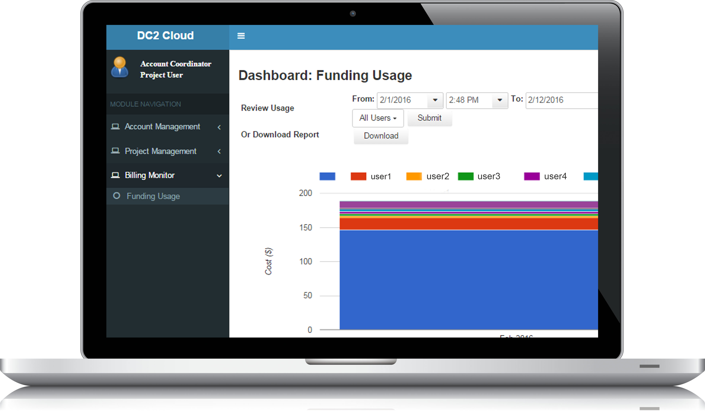

The earthCube integration and test environment can excavate the features from massive data to generate the inner pattern for better decisions. It can generate insight into every aspect of the massive data and find new techniques to develop, manage and improve academic and business applications. It provides a simple and trouble-free way to use the service of data analysis without the requirement of learning complicated procedures or highly professional knowledge.
The platform allows academic and business organizations to make better judgment and to improve or disprove existing algorithms or concepts. It has three main characteristics for data analytics in this platform:
Real-time analytics, which allows users to rapidly develop and deploy low-cost applications to generate real-time features from appliances, sensors, infrastructure or other applications. It can be used for Internet of Things applications, such as real-time remote sensing image management and real-time monitoring by generating deep insights from devices like monitors, temperature sensors, image sensors, intelligent vehicles and smart mobile phones.
Smart analytics, which uses a number of statistical techniques from generative approaches, discriminative and data mining that analyze stream and historical data to generate new knowledge about future or otherwise unknown affairs. It finds the intrinsic properties and patterns of the data with unsupervised or supervised algorithms.
Visual analytics,Visual analytics, which transforms data into a visible and comprehensive way that underlines significant features and commonalities. These visual illustrations helps users to recognize significant aspects of the data rapidly. The analytical reasoning process will speed up by utilizing perceptual reasoning.